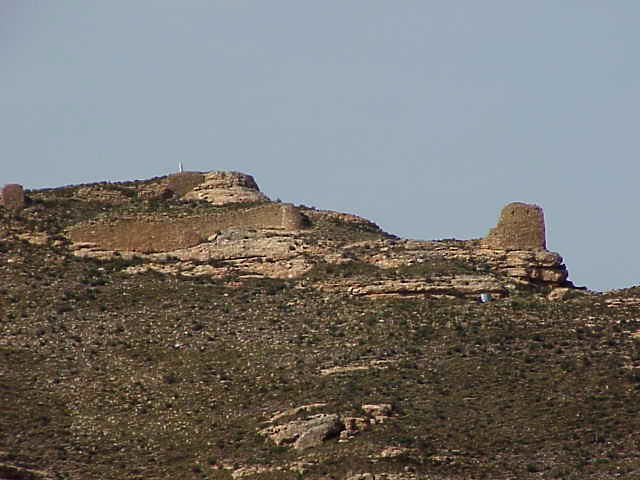

De Olcaf a Olocau del Rey
De origen íbero, posiblemente el castillo de OLCAF u OLOCAF, gozó de gran esplendor en su época.

Época antígua
Edificado sobre un monte de 1199'2 metros de altitud, sus vistas son excepcionales. Poco conocemos de él durante el periodo de la invasión romana en la zona, así como de sus habitantes, (205 a.JC. al 414 d.JC). No tenemos documentos que nos acrediten la existencia de Olocau del Rey y por ello es difícil evaluar la actividad de sus gentes. Por el contrario si que conocemos que la zona dels Ports, capitaneada por Morella, tuvo gran importancia histórica. Perteneció a la Celtiberia de la Hispania Citerior, dentro de la provincia romana de Tarraconense. En sus tierras tuvieron lugar multitud de batallas, lo más significativo fue la introducción del Derecho Romano, las asambleas, los foros y la organización administrativa y territorial de la que fue objeto y conocieron nuestros antepasados, por primera vez gracia a los romanos. También trajeron la Cristianización
Época romana
Si seguimos el hilo de la historia, a la caída del Imperio Romano, le siguió una época oscura y gris, caracterizada por los saqueos y el vandalismo; las invasiones de los Bárbaros (409 al 415) Suevos, Vándalos y Alanos. Sus hazañas únicamente fueron el recorrer los pueblos dedicándose al saqueo y al exterminio de nuestros habitantes, durante dos años; Finalizado este periodo y sin nada más que poder arrasar, acuciados por el hambre y las pestes, decidieron asentarse en diferentes lugares, y así subsistir mediante la agricultura y la ganadería.
En el reparto de las tierras que se hicieron los bárbaros, únicamente la Tarraconense quedó libre y por lo tanto, nuestras tierras volvieron a pertenecer a Roma, hasta el año 476; Año en que el Rey Visigodo Eurico, se apropio de la provincia romana Tarraconense y pasó a su poder. De esta época, cabe destacar el auge de la industria de la lana y según algún historiador, la constitución del Tribunal del Lligalló hacia el año 600 en nuestras tierras. También de entonces, hasta casi nuestros días, debemos las medidas de peso en libras de oro, constituidas por 72 sueldos y la onza, formada por seis sueldos.
Edad media
En el año 711el rey Rodrigo perdió la batalla de Guadalete, y en este punto se consideró el principio de la invasión árabe. Fue el moro Musa, en el año 714, se hizo con la Tarraconense y con ella, la zona que nos ocupa paso a ser de dominio ñarabe. Por la crónicas que hemos obtenido, podemos asegurar que fue el pueblo berebere el que colonizo nuestras tierras, este se caracterizó por su baja cultura y religiosidad, de ahí la poca influencia que dejaron pese a los siglos que estuvieron en la zona. El centro de poder administrativo de nuestra región se situó en Albarrazán, nombre que significa Berebere en árabe y posteriormente en Zaragoza
En 1063, se inició un periodo que años después sería importante para el pueblo de Olocau. Ramiro I, hijo de Sancho el Mayor de Navarra y primer rey cristiano de Aragón, decidió ensanchar su reino a costa del de Zaragoza, perteneciente al rey moro Al-Moctadir. El Rey Ramiro I, perdió la vida en la Batalla de Graus, frente a su rival Al-Moctadir, pero aquí aparece un personaje de veinte años, que después sería ampliamente conocido por todos. Se trataba de Rodrigo Díaz de Vivar, el Cid.
El Cid,según afirma el historiador Menendez Pidal, entre septiembre y octubre de 1090, recibió el encargo del Rey de Zaragoza, de conquistar Morella y reconstruir su Castillo, aunque anterior a este hecho, encontramos una anotación que dice "El Cid se estableció en Lucena, Villafranca y Moleta...., la Iglesuela del Cid, no lejos del Castillo de Olocau, que el Cid edificó contra Morella por encargo del Rey de Zaragoza, forma grupo con los citados pueblos..." También en el Poema del Mío Cid, encontramos un poema, que en una de sus líneas dice: "Eftonçes fe mudo el Cid al puerto de Alucat". Su interpretación, según el antes mencionado historiador Menendez Pidal, es que al llegar a Morella y no poderla tomar, reconstruyó el castillo de Olocau.
Este comenzó a jugar un papel importante cuando en 1180 Alfonso II de Aragón concedió el castillo de Olocau a los Caballeros Hospitalarios de San Juan de Jerusalen (Fray Ermengol d'Aspa), para que sirviera de base en la conquista del Reino de Valencia. Estas donaciones, según hemos podido averiguar, solían hacerse para cuando se conquistara, y a fin de estimular a los que las recibían en emprender su conquista. En 1264 fue permutado por el Castillo real de Villafames.
Jaime I en 1244y Alfonso el liberal en 1287, le concedieron cartas de población
Olocau fue dado a poblar por el Infante Pedro a Arnaldo de Sauit y diez pobladores más el 21 de mayo de 1271, según privilegio firmado en Figueras. En 1280 fue agregado a Morella, aunque manteniendo sus derechos y privilegios. Alfonso III "el liberal" lo donó, desde Mallorca a Ramón Escorsia el 3 de febrero de 1286. Aunque al año siguiente ya dispuso de la población libremente
El día 30 de octubre de 1287, el rey Alfonso III, agrega a Morella el Castillo de Orcaf y la villa de Olocau, sin perder sus franquicias y privilegios, tales como poder nombrar "justicia" independiente de Morella.
El día 8 de junio de 1358, D. Pedro IV, según privilegio firmado en Perpiñan, concede el privilegio a las aldeas de Morella de gobernarse por sí solas, mientras dure la guerra con Castilla, reservándose para después, disponer lo que fuere justo y conveniente.
Participó activamente en las luchas entre el Conde de Urgel y Fernando de Antequera, a la muerte del Rey Martín el Humano en 1410.
Edad moderna
En 1563 el señor de Olocau era D. Alfonso de Villarragut y existían 29 casas de moriscos registradas.
En 1691 se convirtió en Villa independiente, según privilegio real de Carlos II "el hechizado".
El castillo, conocido con los nombres de Olcaf u Olocaf, se encuentra a unos 800 metros al oeste de la población. Viene clasificado como de tipo montano y mediano porte, con tres recintos escalonados no concéntricos y planta de irregularidad dispersa. Hoy está totalmente arruinado.
Su escudo de armas esta dividido en cuatro cuarteles. Los superiores llevan: el de la derecha un cordero y el de la izquierda un león rapante. Los cuarteles inferiores aparecen en la siguiente forma: el de la derecha con una torre y el la izquierda con las barras de Aragón
Su etimología "OLOCAU", según el Dr. Grau Monserrat, acreditado arabista, dice que este nombre proviene del árabe "al'uqab", que significa "lugar alto, eminencia". Otro notable arabista, D. Miguel Asín Palacios, dice que significa "altura" o "Peña grande en las montañas".
Entre sus hijos ilustres, citaremos a D. Gaspar de la Figuera, Cubero de Monforte, Doctor en Derecho, Caballero del hábito de nuestra señora de Montesa y san Jorge de Alfama,, Baile general de la villa y de Morella y Juez de Causas pías por S. M., y señor de Sarañana. Se casó en 1640 y tuvo 19 hijos, escribió varias obras y murió en Morella el 9 de noviembre de 1693.
En el año 2020 se realizó una restauración del castillo que consistio en al estabilización e intervenció para evitar el progesivo deterioro de este. Además se facilitó el acceso y se iluminó para que destacase en la sitlueta nocturna del pueblo. Más información en la web de VProjecte Filigrana
Desde el año 2024 se están realizando excavaciones arqueológicas las cuales están encontrando vestigios de los habitántes de la antiguedad.

Plano: Filigranna

Plano: Filigranna